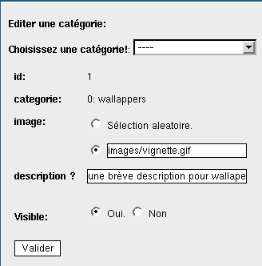

Si vous souhaitez une vignette fixe pour représenter la catégorie cochez l'option comme sur la capture d'écran.
Indiquez le path de l'image en entrant le chemin complet du type:
http://mon_site/mon-image
Si vous désirez une image de la galerie indiquez le (path de depart: magalerie) comme ceci
galerie/wallapers/0001.jpg
Vous pouvez également entrer une brève description de la catégorie principale.
Le texte apparaitra au dessous de la vignette et au dessus de la ligne des sous catégorie.
Sinon laissez le champs vide.